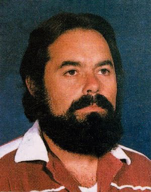

من هو جاكوبو غرينبرغ وأين اختفى؟
في ديسمبر ١٩٩٤ انتظره المقرّبون منه ليحتفلوا بعيد ميلاده الثامن والأربعين. لم يحضر. ومن يومها بقي سؤال ابنته بلا جواب. [٢] [١١] [١٥]
آخر مستجدات القضية
- الاسم الكامل
- Jacobo Grinberg-Zylberbaum
- الميلاد
- ١٢ ديسمبر ١٩٤٦ · مدينة مكسيكو
- المهنة
- باحث مكسيكي في علم النفس والفيزيولوجيا العصبية
النشأة والعائلة
وُلد جاكوبو غرينبرغ زيلبرباوم في مدينة مكسيكو يوم ١٢ ديسمبر ١٩٤٦، في عائلة يهودية تنحدر من مهاجرين بولنديين. حين كان في الثانية عشرة، شارك في رعاية أمه المصابة بورم في الدماغ. بقي في ذاكرته ما رآه حين عادت من العلاج وقد تغيّرت ملامحها وحالها. وفي كتاب «باتشيتا» ربط هو نفسه اهتمامه بالدماغ بمرضها. [١] [٢] [١٣]
في مراهقته عاش فترة في تجمّع زراعي في النقب اسمه عين هشلوشا. تعرّف في فترة الاستعداد للسفر إلى ليزيت أرديتي، التي تزوّجها وصارت أم ابنته الوحيدة إستوشا. وكانت ليزيت فنانة صمّمت أغلفة لكتبه. انفصل الزوجان لاحقًا، وبقيت ليزيت وإستوشا من أهم من حفظ ذكراه وتحدث عن حياته خارج المختبر. [١] [٩] [١١] [٢٠]
من الفيزياء إلى علم النفس
كان مفتونًا بأينشتاين وبدأ بدراسة الفيزياء بعد عودته إلى المكسيك. ثم انتقل إلى علم النفس، حيث عرّفه هيكتور بروست على دراسة الدماغ تجريبيًا. في أرشيف الجامعة الوطنية المستقلة في المكسيك UNAM شاهد مبكر على وجهته الجديدة. ففي سنة ١٩٧٠ قدّم بحث تخرجه عن النشاط الكهربائي في بُنى تحت قشرة الدماغ أثناء التعلّم. [١] [٤]
واصل تدريبه في نيويورك، وتذكر سيرته الرسمية دراسة الماجستير في كلية نيويورك الطبية. وعمل مع الباحث إي روي جون، ونشرا سنة ١٩٨١ بحثًا يسأل كيف تتغيّر استجابة الدماغ للمثير البصري حين يعطيه الإنسان معنى. أما الدكتوراه فيوثّق أرشيف كلية الطب في جامعته المكسيكية أطروحته عام ١٩٨٧ بعنوان «المصاحبات الكهروفسيولوجية للتواصل الإنساني». [٣] [٥] [٦]
الحياة في المختبر رقم ٢٣
أسس مختبرًا للفيزيولوجيا النفسية في جامعة أناهواك. وفي الجامعة الوطنية أدار المختبر رقم ٢٣ بكلية علم النفس. وأسّس المعهد الوطني لدراسة الوعي INPEC وتولى إدارته. جمع حوله باحثين منهم روث سيريسو ومانويل دِلافلور وليا آتي. وتظهر صورة التُقطت في أغسطس ١٩٩٤ غرينبرغ بين سيريسو وآتي عند باب المختبر. [٢] [٣] [٨] [١١]
تتذكر سيريسو أنها حين سألته عمّا ينبغي أن تشتغل عليه، ترك لها اختيار السؤال الذي يهمها. كان يجمع الطلاب للتأمل في يوم، ويعود في يوم آخر لمناقشة ما أنجزوه في تجاربهم. وما زالت تحتفظ بتعيين كتبه لها بخط يده في يناير ١٩٩٣. أما دِلافلور فيذكر ثلاثة أشياء كانت تستأثر بوقت صديقه، هي المختبر والكتابة وابنته. [٢]
من المختبر إلى الشامانات
أراد أن يعرف كيف يصف الناس تجربة الإدراك من داخل تقاليدهم. جلس إلى معالجين وأصحاب أدوار طقسية في مجتمعات مكسيكية مختلفة، وجمع لقاءاته في سلسلة «شامانات المكسيك». في المجلد الأول يسأل دون لوسيو عن الأحلام والطقس وكيف تعلّم ممارسته. وتُظهر الحوارات أن كلمة «شامان» عند المؤلف تجمع أشخاصًا مختلفين في ما يفعلونه وفي تفسيرهم له. [١٢]
أشهر من كتب عنهم باربارا غيريرو المعروفة باسم «باتشيتا». دخل جلساتها في مدينة مكسيكو ودوّن مشاهدات وصفها هو بأنها عمليات علاجية. وتروي ليزيت أنه كان يعود إلى البيت متأثرًا ويحاول التوفيق بين ما اعتقد أنه شاهده وبين معرفته بوظائف الجسم. قيمة الكتاب هنا أنه يحفظ روايته وحوار المشاركين. أما إثبات إجراء جراحة ناجحة أو شفاء مرض فيحتاج إلى توثيق سريري مستقل عن رواية الحاضرين. [٩] [١٣] [٢]
كيف فسّر الوعي وما الذي قاسه
في «النظرية السينترجية» انطلق من سؤال بسيط في صياغته. كيف يتحول ما تستقبله العين إلى عالم نراه أمامنا؟ افترض وجود بنية معلوماتية للفضاء سمّاها Lattice، أو «النسيج»، واقترح أن التجربة المدركة تنشأ من تفاعل النشاط العصبي معها. هذا هو التفسير الذي يقترحه الكتاب. أما ما قاسه في المختبر فكان فروقًا كهربائية تسجلها أقطاب على الرأس. [٨] [١٤]
نشر مع راموس سنة ١٩٨٧ دراسة عن العلاقة بين أنماط تخطيط الدماغ أثناء التواصل. وفي ورقة سنة ١٩٩٤ فصل الفريق مشاركَيْن داخل حجرتين محميتين تفصل بينهما ١٤٫٥ مترًا، ثم عرض مئة ومضة ضوئية على أحدهما وسجّل نشاط الدماغ لدى الاثنين. أفاد المؤلفون بأنهم وجدوا لدى بعض المشاركين استجابة تشبه استجابة من رأى الضوء، وسمّوها «الجهد المنقول». وتوضح زميلته ليا آتي أن تكرار النتيجة بدرجة إحصائية موثوقة ظلّ مشكلة. لذلك تبقى دعوى انتقال المعلومات بين الدماغين أبعد مما يثبته التشابه بين تسجيلين. [٧] [٨] [١١]
الكتب التي تركها
كتب في الإدراك والذاكرة والتأمل، ودوّن رحلاته وأحلامه، وكتب الشعر والرواية أيضًا. ومن أعماله «بناء الواقع» و«المعركة من أجل المعبد» ورواية «النموذج الأولي». يذكر موقعه الرسمي ٥٦ كتابًا، وتحصي دار Penguin له ٥٤. أما المجموعة العربية في هذه المكتبة فتضم سبعة مجلدات من «شامانات المكسيك» وكتاب «النظرية السينترجية». [١] [٣] [١٠] [١٤]
بعد اختفائه انشغلت عائلته بإبقاء الكتب متاحة. غنّت ابنته إستوشا من شعره، وأحيت حفلًا حمل اسم «سينترخيا» في ٢٠٢٣. وفي نوفمبر ٢٠٢٤ تحدثت عن مشروع العائلة مع دار النشر لإعادة إصدار خمسة عشر كتابًا، كانت الستة الأولى منها قد عادت إلى الطباعة في تلك السنة. [١١] [٢٠] [٢٧]
ديسمبر ١٩٩٤ يومًا بيوم
- ٥ ديسمبر · لقاء المسرح
- في شهادة مصوّرة نُشرت بعد سنوات، قالت زوجة أبيه إنها رأته ليلة عرض مسرحي عائلي. تذكّرت أنه كان ينتظر دعوة للسفر إلى الهند وإسرائيل، وأنهما اتفقا على الاحتفال بعيد ميلاده. هذا يؤرّخ آخر لقاء وصفته هي معه، ولا يحدّد بمفرده متى رآه آخرون. [١٥]
- ٨ ديسمبر · تاريخ الاختفاء المتداول
- هذا هو التاريخ الذي تعتمده دار نشره وتورده التغطيات. كان عمره ٤٧ عامًا. وفي رواية أخرى عن الأيام نفسها، قالت روث سيريسو إن تيريسا ميندوثا، زوجته آنذاك، اتصلت بالمختبر وأبلغتها بألّا ينتظروه بقية الشهر. لم تعيّن سيريسو ساعة اختفاء ولا مكانًا شاهدت فيه ما جرى. [١٠] [١١] [١٥]
- ١٢ ديسمبر · عيد الميلاد الذي غاب عنه
- حلّ اليوم الذي كان سيكمل فيه الثامنة والأربعين. انتظره مقربون للاحتفال، ولم يأتِ. وحين استفسرت زوجة أبيه من المختبر قيل لها، بحسب شهادتها، إنه سافر إلى الهند. يفسّر ذلك لماذا اطمأن بعض أهله مؤقتًا إلى فكرة السفر. [١١] [١٥]
- يناير ثم مايو ١٩٩٥ · اتساع دائرة البحث
- تروي زوجة أبيه أنهم قصدوا الشقة التي كان يعيش فيها فوجدوها فارغة. ومع مرور الأشهر انقطع الطلاب عن المختبر. وتؤرّخ سيريسو إبلاغ الأسرة السلطات في مايو ١٩٩٥. تولّى المحقق كليمنتي باديّا متابعة القضية، وبقي مكان غرينبرغ مجهولًا. [٢] [١١] [١٥] [١٦]
ما الذي توصّل إليه التحقيق
راجع المحققون محيطه العائلي وروايات السفر والاتصالات التي أعقبت غيابه. ويظهر في تحقيق سام كينيونيس المنشور سنة ١٩٩٧ أن باديّا نظر أيضًا في صلات غرينبرغ بالكاتب كارلوس كاستانيدا. وفي المقتطف المتاح يقول المحقق إنه لم يكن لديه دليل على وجود غرينبرغ أو زوجته معه. ودخل اسم تيريسا في التحقيق والتغطيات اللاحقة، من دون أن تقدّم المصادر التي استطعنا مراجعتها حكمًا قضائيًا يثبت مسؤوليتها. [١١] [١٦] [٢٤]
عاد المخرج إيدا كويّار إلى خطى باديّا في وثائقي «سر الدكتور غرينبرغ» الصادر سنة ٢٠٢٠. أعاد الفيلم جمع الشهادات واستقصى خيوطًا في أكثر من بلد. ومن أشهر التخمينات التي صاحبت القصة فرضية تورّط الاستخبارات الأمريكية. وجود بحث لغرينبرغ في أرشيف استخباراتي، كما تذكر التغطيات، لا يربط جهازًا باختفائه. وما زال السؤال الأبسط بلا جواب علني موثّق، وهو أين ذهب بعد انقطاع أخباره. [١٦] [١٧] [١٨] [٢٤]
آخر مستجدات القضية
آخر مراجعة · المصير ما زال مجهولًا. حتى تاريخ المراجعة لم نعثر على إعلان من جهة تحقيق يحدّد مكانه أو يثبت سبب اختفائه. وهذه أبرز المحطات التي يمكن تتبّعها في السجل العلني. [٢١] [٢٢] [٢٤] [٢٥] [٢٦]
- ٢٤ أكتوبر ٢٠٢٢ · طلب وثائق
- يسجّل أرشيف الشفافية في ولاية هيدالغو طلبًا للحصول على نسخة عامة من ملف التحقيق. الوثيقة المنشورة إيصال للطلب، ولا تتضمن نتيجة للتحقيق أو قرارًا بإعادة فتحه. [١٩]
- ٢٠٢٤ و٢٠٢٥ · ظهور شهادة عائلية أقدم
- أخرج كويّار في نوفمبر ٢٠٢٤ مقابلة عائلية صُوّرت قبل نشرها بسنوات. وفي يونيو ٢٠٢٥ نشرت «إنفوباي» تفاصيل لقاء المسرح والشقة. أضافت الشهادة تفاصيل عن الأيام التي سبقت قلق الأسرة، من دون أن تقدّم مشاهدة جديدة لغرينبرغ بعد اختفائه. [١٥]
- ٣٠ ديسمبر ٢٠٢٥ · سؤال لرئيسة المكسيك
- سُئلت كلاوديا شينباوم في مؤتمرها الصباحي عن الاختفاء وعن مستقبل أبحاثه. قالت إن الموضوع يحتاج إلى مراجعة وإنها ستسأل وزيرة العلوم روزاورا رويث عمّا يمكن استئنافه. وفي يناير ٢٠٢٦ عادت الصحافة إلى التصريح. لا يتضمن الجواب إعلانًا من النيابة بإعادة فتح تحقيق جنائي. وتذكر «إنفوباي» أن الملف أُغلق في ١٩٩٦؛ ولم يتسنّ لنا التحقق من قرار الإغلاق الأصلي أو من قرار أحدث يغيّر وضعه. [٢١] [٢٢] [٢٣] [٢٦]
- نوفمبر ٢٠٢٦ · ما قاله أخوه
- تداولت الصحافة مقطعًا للممثل آري تيلتش، أخيه غير الشقيق، قال فيه إنه يتحدث إلى جاكوبو كل ليلة. لم يذكر لقاءً أو عنوانًا أو اتصالًا يمكن التحقق منه. وفي ١٧ نوفمبر سُجّلت معه مقابلة تلفزيونية تناولت أخاه ضمن موضوعات أخرى، ثم أُلغي بثّها بطلبه في اليوم التالي بحسب تقرير نُشر في ١٩ نوفمبر. أعاد ذلك القصة إلى الأخبار من دون ظهور دليل جديد على مكانه. [٢٤] [٢٥] [٢٦]
المصادر والمراجع
- وايرد قراءة في السيرة الذاتية والنشأة ومسار الكتابة العودة لموضع القراءة
- إل باييس تحقيق مع زملائه وتلامذته عن حياته واختفائه · يناير ٢٠٢٣ العودة لموضع القراءة
- الموقع الرسمي لجاكوبو غرينبرغ السيرة العلمية ومؤلفاته ومعهد دراسة الوعي العودة لموضع القراءة
- جامعة المكسيك الوطنية المستقلة فهرس رسالة الإجازة في علم النفس · ١٩٧٠ العودة لموضع القراءة
- جامعة المكسيك الوطنية المستقلة فهرس أطروحة الدكتوراه في كلية الطب · ١٩٨٧ العودة لموضع القراءة
- غرينبرغ وإي روي جون دراسة الاستجابات المستثارة وتكوّن المفاهيم · ١٩٨١ العودة لموضع القراءة
- غرينبرغ وخوليان راموس دراسة ارتباط النشاط بين نصفي الدماغ أثناء التواصل · ١٩٨٧ العودة لموضع القراءة
- غرينبرغ ودِلافلور وآتي وغوسوامي الورقة الأصلية عن «الجهد المنقول» · Physics Essays · ١٩٩٤ العودة لموضع القراءة
- إنلاسي خوديو مقابلة مصوّرة مع ليزيت أرديتي عن حياتهما وأبحاثه · ٢٠٢٠ العودة لموضع القراءة
- Penguin Libros سيرة المؤلف لدى دار النشر وتاريخ اختفائه العودة لموضع القراءة
- مجلة Lengua لدى Penguin تحقيق مطوّل مع الأسرة وأعضاء المختبر عن عمله والتحقيق العودة لموضع القراءة
- غرينبرغ · المصادر الإسبانية في المكتبة المجلد الأول من «شامانات المكسيك» العودة لموضع القراءة
- غرينبرغ · المصادر الإسبانية في المكتبة المجلد الثالث «باتشيتا» العودة لموضع القراءة
- غرينبرغ · المصادر الإسبانية في المكتبة «النظرية السينترجية» وفيها صورة المؤلف المستخدمة هنا العودة لموضع القراءة
- إنفوباي شهادة زوجة أبيه عن لقاء ديسمبر منشورة مجددًا في يونيو ٢٠٢٥ العودة لموضع القراءة
- سام كينيونيس · New Age Journal مقتطفات معاد نشرها من تحقيق «البحث عن الدكتور غرينبرغ» · ١٩٩٧ العودة لموضع القراءة
- Polar Star Films صفحة منتجي وثائقي «سر الدكتور غرينبرغ» · ٢٠٢٠ العودة لموضع القراءة
- بوابة الثقافة بجامعة UNAM بطاقة عرض الوثائقي ومسار بحث المخرج العودة لموضع القراءة
- سجل الشفافية في ولاية هيدالغو إيصال طلب النسخة العامة من ملف التحقيق · أكتوبر ٢٠٢٢ العودة لموضع القراءة
- إل باييس لقاء مع إستوشا عن أبيها وإعادة نشر كتبه · نوفمبر ٢٠٢٤ العودة لموضع القراءة
- الرئاسة المكسيكية المؤتمر الصحفي المصوّر · ٣٠ ديسمبر ٢٠٢٥ · يبدأ السؤال عند ١:٣٦:٢٧ العودة لموضع القراءة
- SDPnoticias نص جواب كلاوديا شينباوم عن مراجعة القضية · ٣٠ ديسمبر ٢٠٢٥ العودة لموضع القراءة
- El Informador تغطية الحديث عن إمكان مراجعة القضية · ١٨ يناير ٢٠٢٦ العودة لموضع القراءة
- Ovaciones تغطية حديث آري تيلتش عن أخيه · ١٦ نوفمبر ٢٠٢٦ العودة لموضع القراءة
- إنفوباي تقرير عن تسجيل المقابلة التلفزيونية وإلغاء بثها · ١٩ نوفمبر ٢٠٢٦ العودة لموضع القراءة
- إنفوباي تصريح آري تيلتش وما ذكرته الصحيفة عن إغلاق الملف · ١٥ نوفمبر ٢٠٢٦ العودة لموضع القراءة
- إنلاسي خوديو حفل «سينترخيا» الذي قدمته ابنته تكريمًا له · مارس ٢٠٢٣ العودة لموضع القراءة